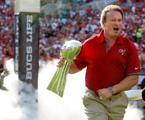
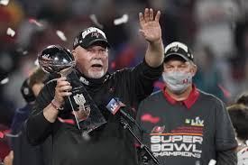
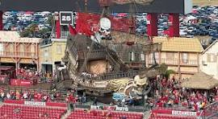

I have followed the Bucs since I was a kid in the mid-90s. This was about the time the team went from their traditional creamsicle uniforms to the red and pewter color scheme they have now. You may or may not know this, but they have gone from being the worst franchise in all of sports to now having two Super Bowl rings: 2003 and 2021.
Tampa Bay Buccaneers Official Site

